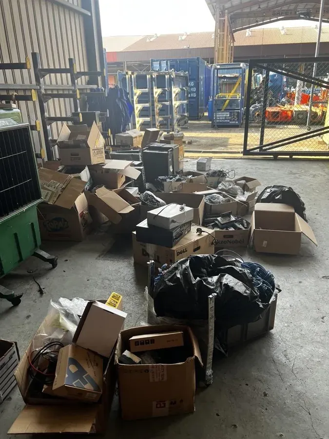
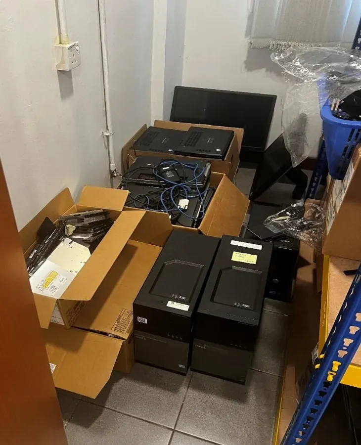
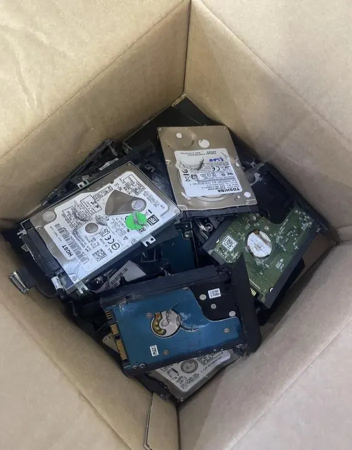
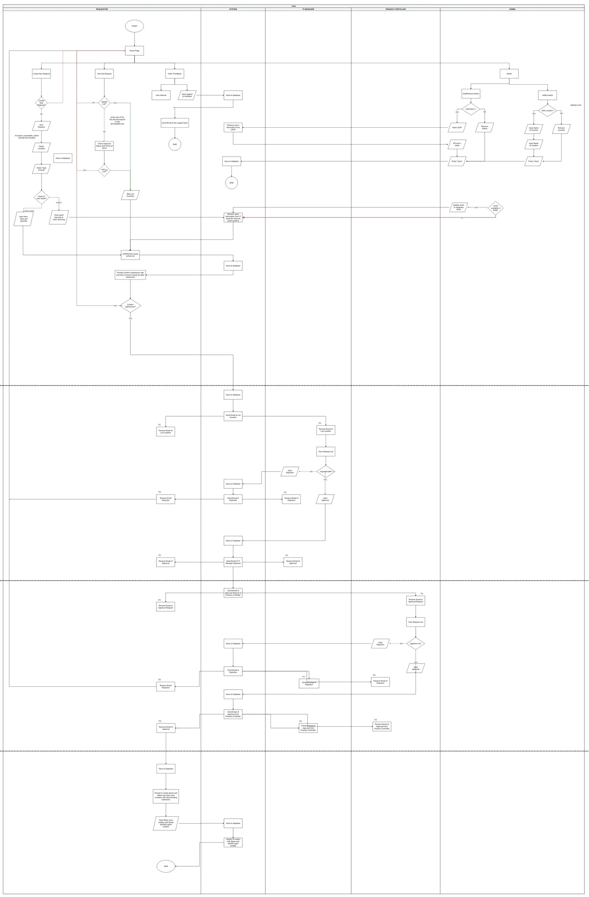
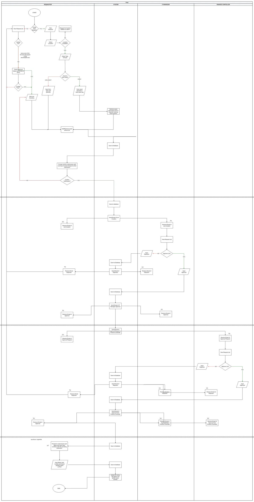
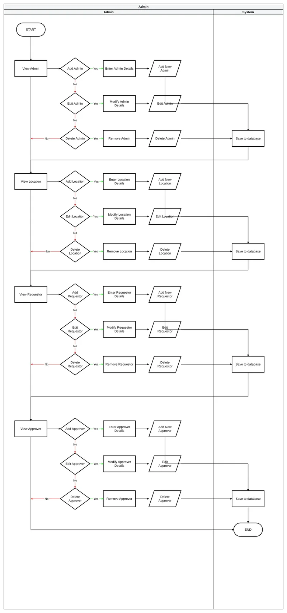
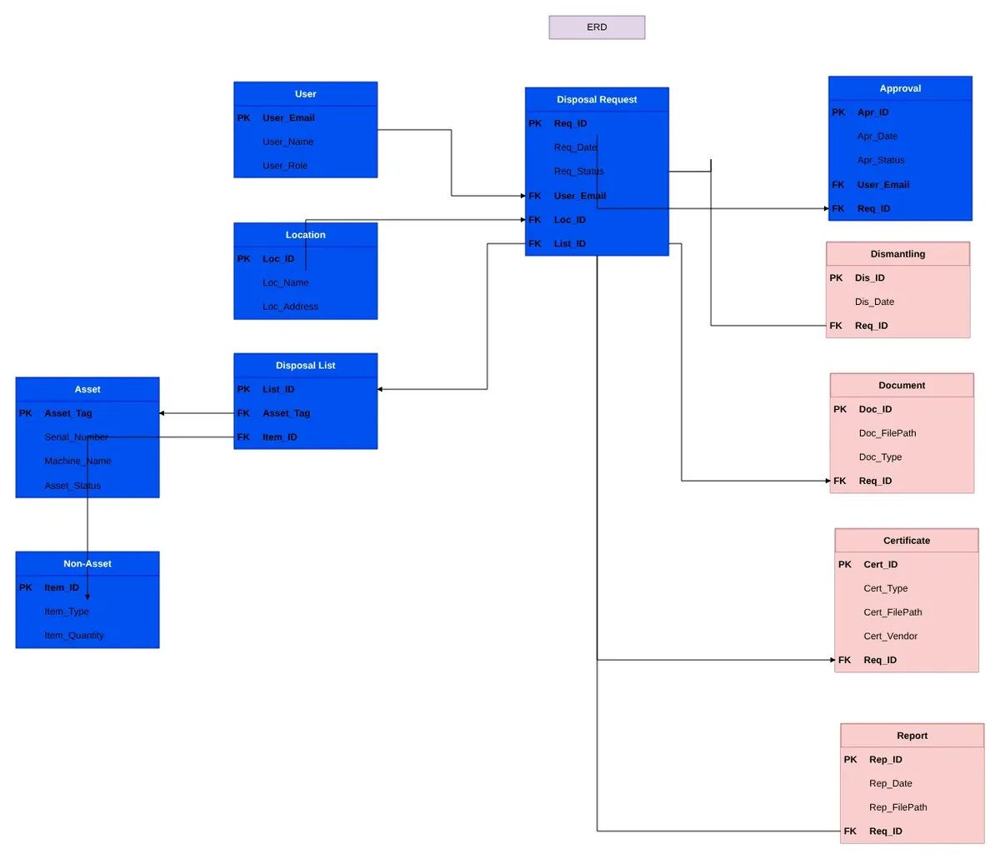
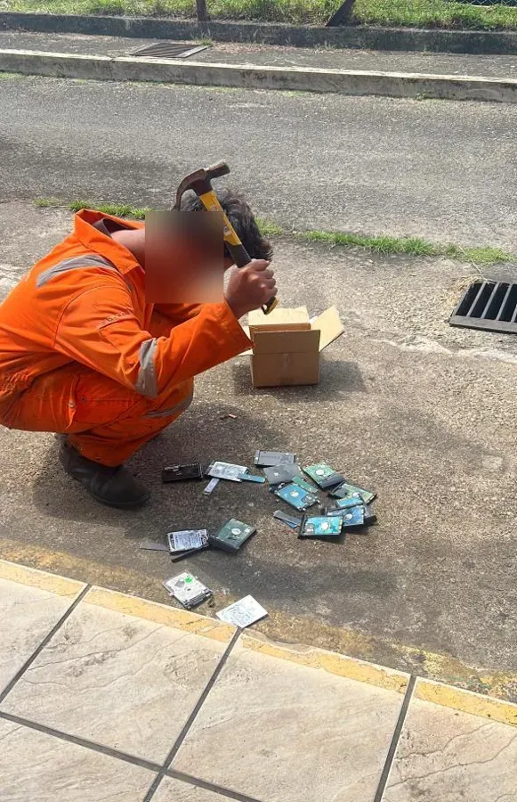

Before I built a single screen of the IT Asset Disposal app at SLB, I drew the whole thing out. Who does what, which emails go where, what gets saved, and how the data fits together. It ended up as one draw.io file with nine pages, kept in the order I made them. This note walks through how they changed.
What we were actually disposing of
Disposal sounds abstract until you see it: switches, access points, chargers and hard drives piling up in a storeroom, waiting for two approvals that lived in an email thread.



Each laptop has its own asset tag and serial number. A cable lock doesn't; you just count them. That one difference shaped the whole data model later on.
1. The first flow: four lanes and one "third party"
The first version came over from LucidChart. It had four lanes: the requestor, the system, an admin, and a single "third party" approver. The whole approval was one cycle, repeated for the Finance Controller. The notes in the margin are me reminding myself to focus on manual input first.

2. Giving everyone their own lane
The single "third party" was really two different people with two different jobs. The IT Manager and the Finance Controller got their own lanes, every email was spelled out with who gets it as TO and who as CC, and a home page appeared with Create, View My Requests and Help.

3. The final flow, and admin on its own
The final version pulled the admin work out into its own chart. Admins can view, add, edit and remove four things: other admins, locations, requestors and approvers. The main flow also got a "Confirm submission" step, warning that the list can't change once it's submitted.


4. From a ten-table ERD to five lists
The team's first ERD tried to model everything: users, requests, approvals, dismantling, documents, certificates and reports. It was a good map of the whole disposal process, but most of it wasn't the app's job.

I cut it down and normalised it to third normal form: each fact stored once, and tables pointing at each other by ID.

5. The data model that shipped
Building it in SharePoint lists changed it one more time. This is what the app actually runs on.
One thing in there looks like it breaks the rules: the approvers' names and emails are copied from the location onto each case. That's on purpose. If a base gets a new IT Manager next month, the cases already waiting keep the approver they were submitted to, instead of suddenly landing on someone who's never seen them.
| List | What it holds |
|---|---|
| Case | One row per disposal case: base, requestor, both approvers and status |
| Item | Each item in a case. Assets have a tag and serial number; non-assets have a quantity |
| Location | Each base, with its 1st and 2nd level approvers |
| Watchlist | Colleagues added to a case so they can view, edit or submit it |
| IT Asset List | The catalogue of device types, brands and models behind the dropdowns |
What never made it
Two ideas sit in every version of the charts: scanning a barcode to pull an asset's details from the internal asset system, and marking it as disposed in the hardware ESM afterwards. Both needed access to SLB systems outside an intern project's scope, so items were typed in by hand. If anyone picks the app up again, that's where I'd start.

The draw.io file, the data model and sample data are all in the repo's docs.
26 screens · about 2 minutesSee how the charts turned outClick through one disposal case from draft to disposed.